JCV8 EKG bileklik
Nabız, EKG, kan oksijeni, uyku, adım ve cilt ısısı. Şarj kablosu ve kullanım kılavuzuyla.
2.499,00 TL KDV dahil
JCV8 EKG bileklik için
Nabız, EKG, uyku ve kandaki oksijeni ekransız bileklikle izleyin. Hekiminiz, aileniz ya da bir araştırma kurumu yalnızca sizin seçtiğiniz verileri, sizin belirlediğiniz süre boyunca görür.
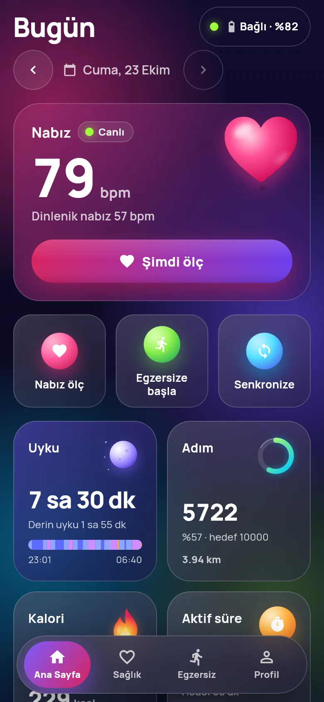
Nasıl çalışır
JCV8 bileklik gün boyu nabız, SpO2, uyku ve adımı ölçer; parmağınızı elektroda koyunca EKG çeker.
Kutudaki QR kodu okutun ya da yakındaki bileklikleri arayın. Ölçümler telefona gelir ve orada şifreli saklanır.
Hekiminizin verdiği davet kodunu girin ya da aile grubu kurun. Neyi, kiminle, ne kadar süre paylaşacağınızı siz seçersiniz.
Özellikler
Bileklik ekransızdır; ekranı telefonunuzdur. Uygulama ölçümleri bileklikten çeker, telefonda şifreli saklar ve gün gün gösterir.
Günün özeti
Ana Sayfa gece uykusunu, gece HRV ortalamasını ve gün içi yükü bir cümlede toplar. Tarih gezgini ile önceki günlere dönebilirsiniz.
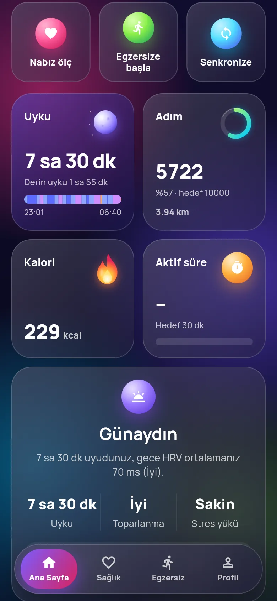
EKG
Parmağınızı bilekliğin üstündeki elektroda koyun; ritim canlı çizilir. Kayıt ortalama, en düşük ve en yüksek nabızla saklanır, hekiminizle FHIR olarak paylaşılabilir.
Bileklik tıbbi cihaz değildir; tanı koymaz.
Uyku
Uyku süresi, yattığınız ve kalktığınız saat, evrelerin süresi ve yüzdesi. Son 7 gece yan yana.
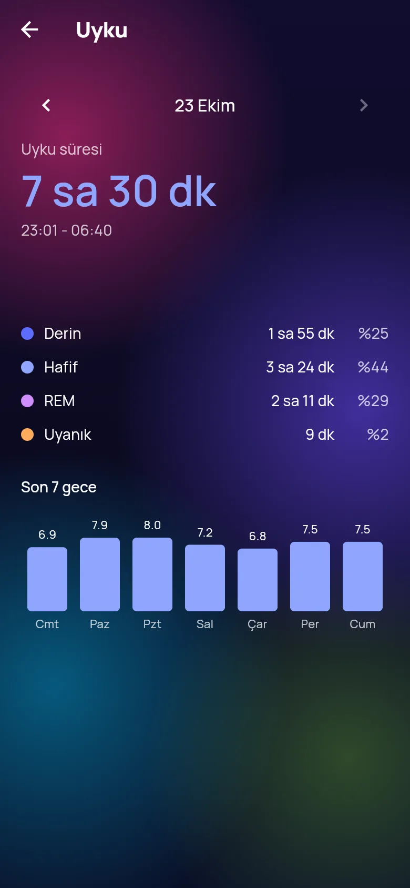
Kalp ve oksijen
Nabız, HRV, SpO2, stres, vücut ısısı ve tahmini tansiyon için ayrıntı ekranları. Ortalama, en yüksek ve en düşük değer her zaman görünür.
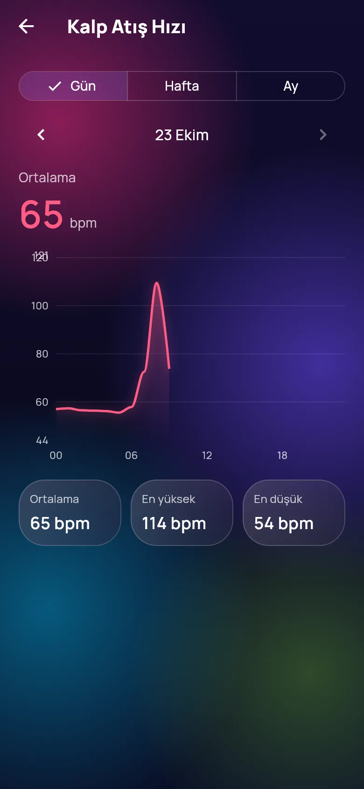
Egzersiz
Koşudan yogaya sporu seçin, başlatın; bileklik süreyi, nabzı, adımı, mesafeyi ve kaloriyi canlı gönderir. Son 30 günün egzersizleri listede kalır.
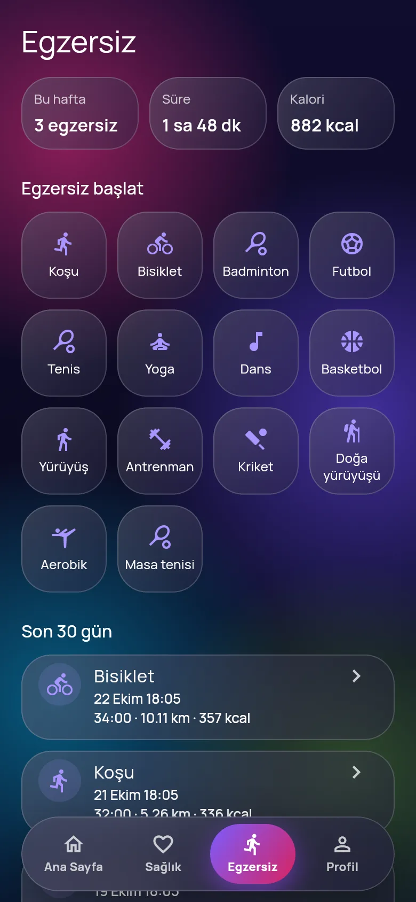
İlerleme
Uyku ve HRV'den hesaplanan günlük enerji, geçen haftayla karşılaştırmalı rapor ve adım hedefinize göre rozetler. Hesabın nasıl yapıldığı ekranda yazar.
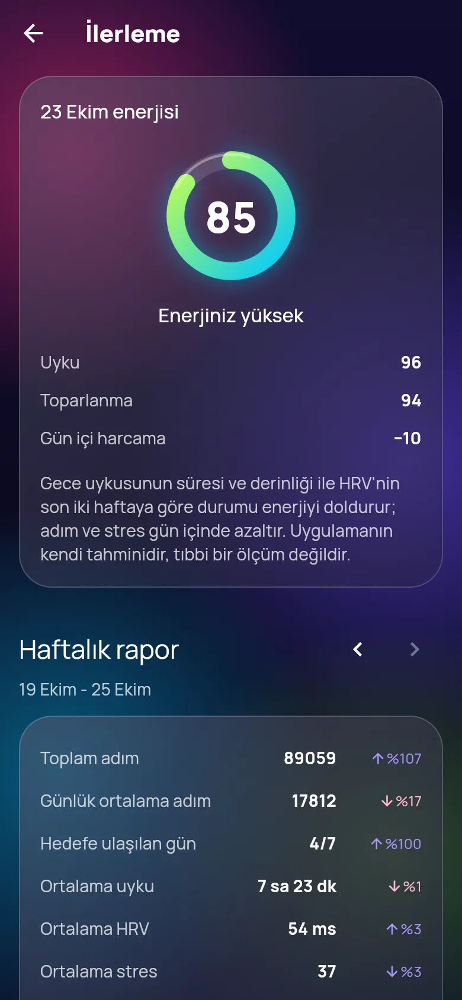
Dahası
İlaç ve su hatırlatıcıları bilekliğe yazılır; telefon yanınızda olmasa da titrer.
Kilo ve vücut kompozisyonunu elle girin; VKİ ve grafik hazır. Ayrıca seçmedikçe kimseyle paylaşılmaz.
Seçtiğiniz türleri telefonun sağlık uygulamasına yazar; oradan veri okumaz.
Tüm ölçümleriniz FHIR R4 dosyası olarak; hekiminize ya da başka bir uygulamaya.
Nabız, SpO2 ve diğer ölçümlerin aralığını ve saatlerini siz seçersiniz.
Bilekliğin kutusundaki QR kodu okutun ya da yakındaki bileklikleri arayın.
24 ya da 12 saat, metrik ya da ABD birimleri; bileklik ayarları uygulamadan.
Her sabah son gecenin nabız, HRV, ısı ve SpO2'si kendi olağan değerlerinizle karşılaştırılır; belirgin sapma varsa kart söyler.
Dinlenik nabız, adım, uyku ve VKİ'den takvim yaşınıza göre bir tahmin ve son 8 haftanın eğilimi.
Isınmadan azamiye beş bölge; nabız ekranında ve her egzersizin özetinde hangi bölgede ne kadar kaldığınız.
İlk haftanın ortalaması olağan ısınız sayılır; sonraki günlerin farkı sıfırın üstü ve altı olarak çizilir.
Hata ya da öneriyi uygulamadan iletin; kimliğiniz ve sağlık veriniz gönderilmez.
Nasıl ölçer
Bileklik bir tıbbi cihaz değildir. Neyi nasıl ölçtüğünü ve hangi durumda yanılabileceğini açıkça yazıyoruz.
Nabız ve SpO2
Bilekliğin altındaki ışık, her atımda deride değişen kan miktarını okur (fotopletismografi, PPG). Nabız bu dalganın sıklığından, SpO2 farklı dalga boylarındaki ışığın ne kadar emildiğinden hesaplanır.
Hareket, soğuk el, dövme ve gevşek takma ölçümü bozar.
EKG
Bilekteki elektrotla diğer elinizin parmağını koyduğunuz üst elektrot arasında kalbin elektriksel sinyali kaydedilir; kollar arası tek derivasyona benzer. Atımlar arası süreden nabız ve değişkenlik hesaplanır.
Hastanedeki 12 kanallı EKG'nin yerine geçmez; ritim hakkında fikir verir.
HRV ve stres
Ardışık atımlar arasındaki sürelerin ne kadar değiştiği (HRV) dinlenmişlikle ilgilidir. Değer kişiden kişiye çok değiştiği için uygulama sizi başkalarıyla değil, kendi geçmişinizle karşılaştırır.
Kafein, alkol, hastalık ve geç yemek geceki HRV'yi düşürür.
Uyku
Bileklik gece boyunca hareketi ve nabzı izleyip derin, hafif, REM ve uyanık evreleri tahmin eder; uygulama süreyi ve evrelerin payını gösterir.
Uyku laboratuvarındaki polisomnografi kadar kesin değildir.
Tansiyon
Değer kolluk takılmadan, nabız dalgasının biçiminden tahmin edilir. Eğilimi görmek için kullanın.
İlaç ya da tedavi kararı için kollu bir tansiyon aletiyle ölçün.
Vücut ısısı
Bilek cildinin ısısı vücudun iç ısısından düşüktür ve ortamdan etkilenir. Bu yüzden uygulama ilk haftanızın ortalamasını temel alır ve ondan farkı gösterir.
Ateşi bir termometreyle doğrulayın.
Paylaşım
Her paylaşım ayrı bir açık rızadır. Türleri tek tek açarsınız; varsayılan olarak hiçbir şey paylaşılmaz. Bağlantıyı kaldırdığınız an erişim biter.
Hekim
Hekiminiz panelden 7 haneli bir kod verir. Kodu girince amaç, istenen veriler ve süre ekranda görünür; hangilerini paylaşacağınızı siz seçersiniz.
Araştırma kurumu
Kurum yalnızca rızadaki türleri, takma kimliğinizle görür. Adınız, TC kimlik numaranız ya da iletişim bilginiz istenmez.
Aile
Grup kurun, annenizi ya da kardeşinizi kişiye özel kodla davet edin. Herkes grupla ne paylaşacağını kendisi seçer.
Hekim tarayıcıdan giriş yapar ve yalnızca rıza vermiş hastaları görür. Kendi hasta kayıtlarını açar, kayda özel davet kodu verir; rızadaki türlerin tarih aralıklı raporunu grafik ve tablolarla oluşturur. Her görüntüleme hastanın erişim kayıtlarına geçer.
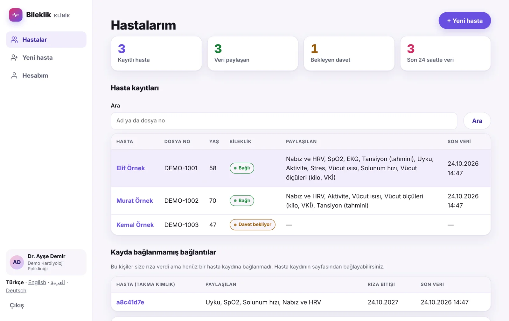
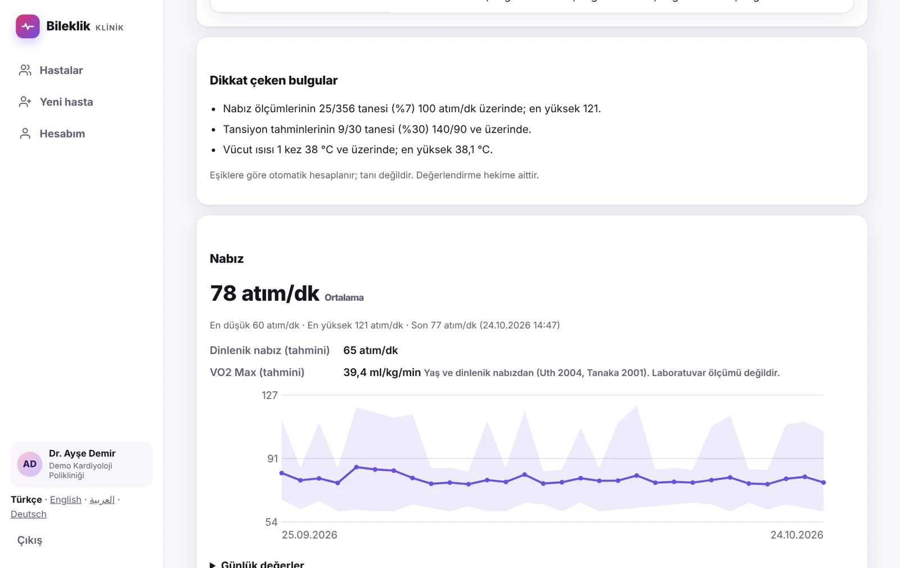
Grupla neyi paylaştığınızı anahtarlarla seçersiniz; değişiklik anında geçerli olur ve izin tarihi kayıtlıdır. Üyelerin neyi paylaştığı listede görünür. İsterseniz "Acil durumda grubu uyar"ı da açarsınız: paylaştığınız nabız ya da SpO2 uzun süre olağan dışı kalırsa aileniz uygulamada uyarı görür.
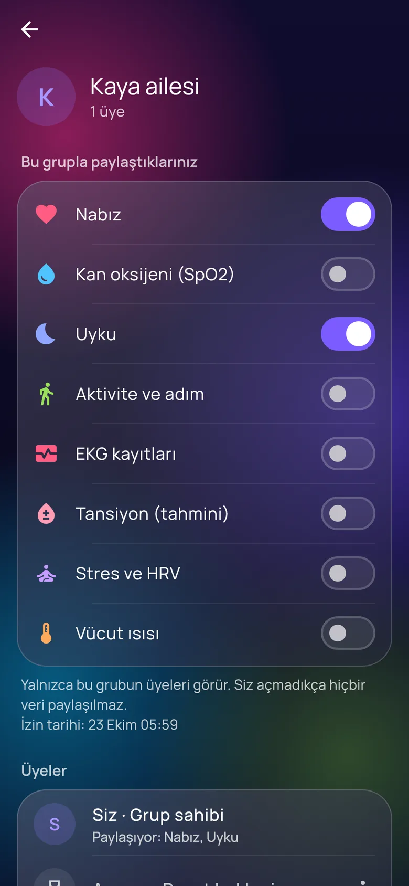
Gizlilik ve KVKK
Veriler önce telefonunuzda kalır. Portala yalnızca paylaşmayı seçtiğiniz türler gider; orada da şifreli saklanır ve her erişim kaydedilir.
Gizlilik politikasının tamamı (taslak, dört dil)
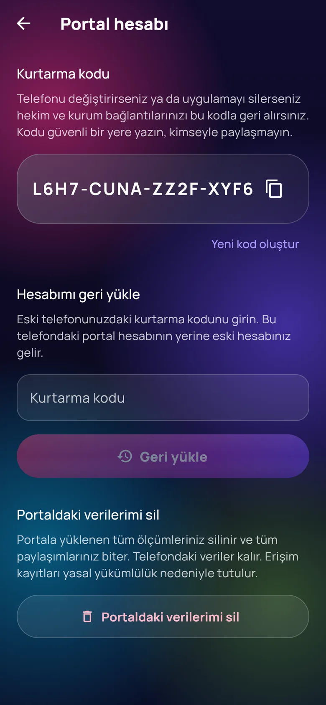
Dört dil
Arapçada ekran sağdan sola aynalanır; sayılar ve birimler okunaklı kalır. Dil ilk açılışta seçilir, Profil'den değiştirilir. Hekim paneli de dört dildedir.
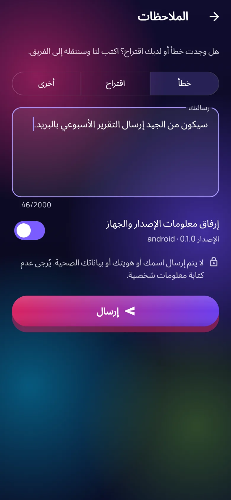
Deneyin
Test sunucusunda uygulama ve hekim paneli birbirine bağlı: paneldeki davet kodunu uygulamaya girdiğinizde bağlantı kurulur, ölçümler panelde görünür. Sunucu bir süre kullanılmayınca uyur; ilk açılış bir dakika kadar sürebilir.
Uygulama
Telefonda açıp ana ekrana da ekleyebilirsiniz. Profil > Hekim ve araştırma kurumu'ndan panelin verdiği kodu girin.
Hekim paneli
Hastalarım > Davet oluştur ile kod alın ya da kendi hekim hesabınızı açın.
demo@bileklik.appdemo-sifre-2026Satın al
Uygulama ve temel özellikler ücretsiz. Yapay zeka raporu için uygulamadan Premium'a geçebilirsiniz: aylık 149,99 TL ya da yıllık 1.199,99 TL.
Demo: fiyatlar örnektir, gerçek ödeme alınmaz ve bilgileriniz hiçbir yere gönderilmez. Yayında ödeme, kart bilgilerinin doğrudan ödeme kuruluşuna gittiği güvenli ödeme sayfasıyla alınacak; kart bilgisi bizim sunucumuza gelmez.
Nabız, EKG, kan oksijeni, uyku, adım ve cilt ısısı. Şarj kablosu ve kullanım kılavuzuyla.
Bileklik ve bir yıllık Premium kodu: haftalık yapay zeka sağlık raporu ve kişisel öneriler.
Sepetiniz boş.
İş birliği
Distribütörler, kendi markasıyla üretmek isteyen firmalar, çalışanlarına sağlık programı kuran kurumlar ve hastalarını uzaktan izlemek isteyen klinikler için.
Sık sorulanlar
Hayır. Ölçümler kendinizi takip etmeniz ve hekiminizle konuşmanız içindir; tanı koymaz. Tansiyon değeri tahminidir.
JCV8 ekransız EKG bileklikle. Bluetooth ile bağlanır; eşleştirme için QR kodu okutabilir ya da yakındaki bileklikleri arayabilirsiniz.
Telefonunuzda, şifreli. Bir hekim, aile grubu ya da araştırma kurumuyla paylaşmayı seçtiğinizde yalnızca o türler portala gider ve orada da şifreli saklanır.
Hekiminizin verdiği davet kodunu uygulamaya girer, paylaşacağınız türleri ve süreyi onaylarsınız. Hekim tarayıcıdaki panelden yalnızca bunları görür.
Profil > Hekim ve araştırma kurumu ya da Sağlık topluluğu bölümünden bağlantıyı kaldırın; erişim hemen biter. Portaldaki verilerinizi Profil > Portal hesabı'ndan silebilirsiniz.
Portal hesabınızın kurtarma kodunu yeni telefona girersiniz; hekim ve aile bağlantılarınız geri gelir, eski telefonun erişimi kesilir.
App Store ve Google Play sürümleri hazırlanıyor. O zamana kadar uygulamayı ve hekim panelini yukarıdaki test sunucusunda deneyebilirsiniz.
Uygulamayı ve hekim panelini bileklik olmadan tarayıcıda deneyin.